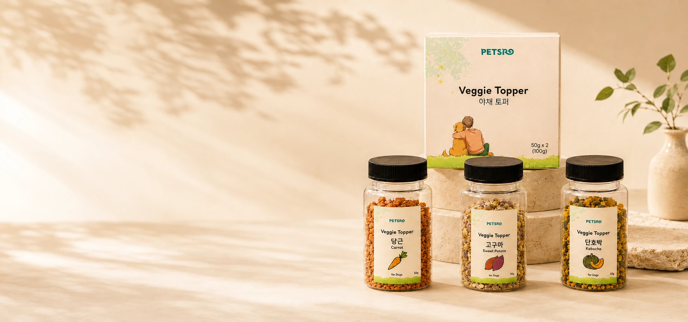
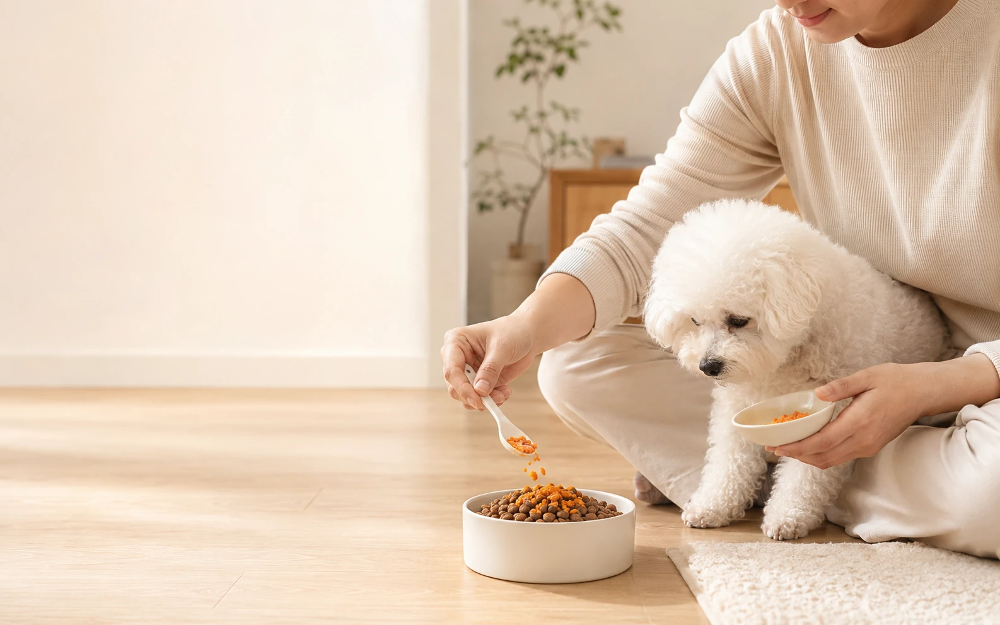

01
Sweet Potato
고구마은은한 원물의 맛과 식감


EVERYDAY MEAL
평소 먹는 사료 위에 원하는 야채를 조금 더해보세요.
PETSRO는 번거로운 야채 준비 대신, 실제 야채 식재료와 맛·향·식감의 변화를
일상 식사에 간편하게 더하는 방법을 제안합니다.
VEGGIE TOPPER LINEUP
단일 야채를 각각 선택해 평소 식사에 필요한 만큼 간편하게 더할 수 있습니다.
은은한 원물의 맛과 식감
선명한 원료의 색과 향
단호박 특유의 풍미와 입자감
새로운 Vegetable Meal Topper 라인업
WHY PETSRO
Korean-Grown Single Vegetables
Steaming & Low-Temperature Hot-Air Drying
Heat Treatment
Distinctive Small-Particle Texture
TEXTURE & PROCESS
크기가 다른 작은 입자가 자연스럽게 섞인 형태로 가공해, 실제 야채 원료의 모습을 확인하면서 사료 위에는 간편하게 뿌릴 수 있도록 만들었습니다.
대한민국 특허출원 제10-2025-0161849호
PRODUCT LINE
고구마·당근·단호박에서 시작한 PETSRO Veggie Topper는 브로콜리 제품 출시를 준비하고 있습니다. 단일 야채를 각각 선택하는 제품 구조를 기반으로 앞으로도 다양한 야채 원료로 Vegetable Meal Topper 라인업을 확장해갑니다.
FROM KOREA
다양한 식재료로 한 끼의 즐거움을 넓혀가는 한국의 식문화처럼, PETSRO는 반려견의 평소 식사에도 새로운 야채 선택지를 더하고자 합니다. 국내산 야채와 제품 개발 경험을 바탕으로 한국에서 시작해 더 넓은 시장으로 Vegetable Meal Topper 라인을 확장해갑니다.
From Korean vegetables to more varied mealtimes.